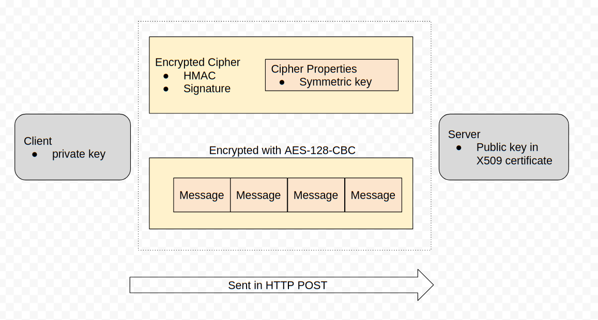
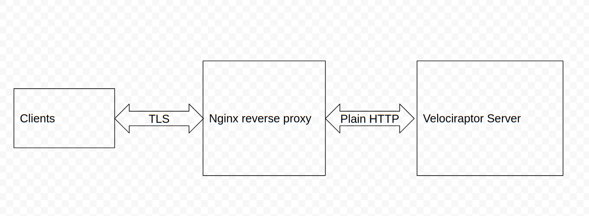
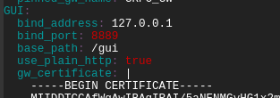

Velociraptor Communications
Listen to the beast
You might have heard that Velociraptor allows you to quickly query endpoint state for rapid response and monitoring of many thousands of devices across the internet. Unlike some other tools, Velociraptor’s communication is scalable, secure and instantaneous.
Many people ask me about the client/server communication protocol. The Velociraptor documentation simply states that communications is encrypted over a TLS connection but there is more to it than that.
In this post I would like to delve into the low level details of how clients securely communicate with the server and cover some common deployment scenarios. By understanding exactly how this works we will gain insight into debugging communication problems and enabling more sophisticated deployment scenarios.
Velociraptor’s config file
In the following discussion we will refer to a typical Velociraptor configuration file as generated by the command
velociraptor config generate -i
For this example we select a typical self signed deployment.
Communication overview
Clients (Velociraptor instances running on endpoints) connect to the server over the http protocol, typically embedded within a TLS connection. Although Velociraptor shares the same communication protocol as was used in the GRR project, it was enhanced for Velociraptor’s use to be more secure and efficient.
Velociraptor’s internal PKI
Every Velociraptor deployments creates an internal PKI which underpins it. The configuration wizard create an internal CA with an X509 certificate and a private key. This CA is used to
-
Create initial server certificates and any additional certificates for key rotation.
-
CA public certificate is embedded in the client’s configuration and is used to verify server communications.
-
The CA is used to create API keys for programmatic access. The server is then able to verify API clients.
The configuration file contains the CA’s X509 certificate in the Client.ca_certificate parameter (it is therefore embedded in the client configuration). The private key is contained in the CA.private_key parameter.
In a secure installation you should remove the CA.private_key section from the server config and keep it offline. You only need it to create new API keys using the velociraptor config api_client command, and the server does not need it in normal operations.
Messages
Clients and servers communicate by sending each other messages (which are simply protocol buffers), for example, a message may contain VQL queries or result sets. Messages are collected into a list and sent in a single POST operation in a MessageList protobuf. This protobuf is encrypted using a session key with a symmetric cipher (aes_128_cbc). The session key is chosen by the sending party and is written into an encrypted Cipher protobuf and sent along with each message.

This symmetric key is encoded in a Cipher Properties protobuf which is encrypted in turn using the receiving party’s public key and signed using the sending party’s private key.
Key caching
The encrypted cipher is sent with each message and contains an encrypted version of the same session key. This means that it is always possible to derive the session key from each post message by performing RSA decrypt/verify operations, but having decoded the symmetric key once — it is possible to cache it for the remainder of the session. This avoids expensive RSA operations — as long as the server communicated with the client recently, the symmetric key will be cached and can be reused.
On a loaded server you might notice CPU utilization spikes for a few seconds after the system starts up, as the server unlocks the session keys from incoming clients, but after that the server should not need to perform many RSA operations and CPU load should be low since most session keys are cached in memory.
The Frontend.expected_clients setting controls the size of the memory cache of session keys. If this is too small, keys will be evicted from cache and cpu load will rapidly rise as the server is forced to do more RSA operations to decrypt client messages. You should increase this value to reflect how many clients you expect to be active at the same time.
HTTP protocol
In the last section we saw that Velociraptor messages are both signed and encrypted by the internal deployment CA. But how are these messages exchanged over the internet?
Velociraptor uses HTTPS POST messages to deliver message sets to the server. The server in turn sends messages to the client in the body of the POST request. The client connects to one of the server URLs provided in the Client.server_urls setting in its config file.
Before the client communicates with the server, the client must verify it is actually talking with the correct server. This happens at two levels:
-
If the URL is a HTTPS URL then the TLS connection needs to be verified
-
The client will fetch the url /server.pem to receive the server’s internal certificate. This certificate must be verified by the embedded CA.
Note that this verification is essential in order to prevent the client from accidentally talking with captive portals or MITM proxies.
TLS verification
Velociraptor currently supports 2 modes for deployment via the config wizard:
-
Self signed mode uses internal CAs for the TLS certificates. The client knows it is in self signed mode if the Client.use_self_signed_ssl flag is true.
-
Proper certificates minted by Let’s encrypt.
Velociraptor verifies self signed TLS certificates using its built in CA. This essentially pins the server’s certificate inside the client — even if a MITM was able to mint another certificate (even if it was trusted by the global roots!) it would not be valid since it was not issued by Velociraptor’s internal CA which is the only CA we trust in this mode! In this way self signed mode is more secure than use a public CA.
The Client.pinned_server_name specifies the common name of the server (or DNS name in the Server Alternate Name (SAN) field). The client verifies that the certificate is correct AND that the name is the same as the pinned name. You typically do not need to change this setting.
If the client is not in self signed mode (i.e. Client.use_self_signed_ssl is false or not present), it expects to verify TLS connections using the system’s root certificate store. In this configuration, Velociraptor is susceptible to a MITM SSL inspection proxy, and we must rely on the internal encryption mechanism as described in the previous section to protect communications.
NOTE: In practice we find that often customer networks do contain SSL inspection proxies and using self signed certificates breaks communications altogether. We typically prefer to deploy Let’s Encrypt certificates for reliability and better interoperability.
Debugging client communications
Now that we have an understanding on the low level communication mechanism, let’s try to apply our understanding to debugging common deployment issues.
If the client does not appear to properly connect to the server, the first thing is to run it manually (using the velociraptor client -v command):

In the above example, I ran the client manually with the -v switch. I see the client starting up and immediately trying to connect to its URL (in this case https://test.velocidex-training.com/ ) However this fails and the client will wait for a short time before retrying to connect again.

A common problem here is network filtering making it impossible to reach the server. You can test this by simply running curl with the server’s URL.
Once you enable connectivity, you might encounter another problem

The Unable to parse PEM message indicates that the client is trying to fetch the server.pem file but it is not able to validate it. This often happens with captive portal type of proxies which interfere with the data transferred. It can also happen if your DNS setting point to a completely different server.
We can verify the server.pem manually by using curl (note that when using self signed mode you might need to provide curl with the -k flag to ignore the certificate errors):

Note that the server.pem is always signed by the velociraptor internal CA in all deployment modes (even with lets encrypt). You can view the certificate details by using openssl:
curl https://test.velocidex-training.comom/server.pem | openssl x509 -text
SSL Offloading
The Velociraptor server is very fast and can typically handle many thousands of clients connected at the same time. One of the largest limitations though is SSL processing. Typically SSL operations can take a significant amount of CPU resources in performing cryptography (we noted previously that Velociraptor’s own cryptography can be cached and therefore usually does not use much CPU).
Once approach to help scalability is to offload SSL processing to special reverse proxies. Typically these can use hardware cryptography acceleration to offload crypto from the CPU.

In this example, we will show how nginx can be used to terminate the TLS connections and then forward plain HTTP connections to the Velociraptor server (Many cloud provides also offer a cloud version of an SSL load balancer). This setup is also suitable if you want to use standard certificates (i.e. not Let’s Encrypt ones).
First I will install nginx according to any number of tutorials on the net (for this or this). My config file is as follows:
I am using certbot to manage the lets encrypt certificates and I have two main routes:
-
URLs starting with /gui/ will be redirected to the Velociraptor GUI port (by default port 8889) using plain HTTP.
-
All other URLs will be redirected to the frontend port (port 8000) using plain http.
Now I need to make Velociraptor listen on plain http instead of the default TLS. I do this simply by adding the use_plain_http: true flag both to the GUI and Frontend sections.

I also specify the GUI to listen on the path starting with “/gui” instead of the root — this allows nginx to proxy the GUI at a different URL to the default.
On the client’s side, the server appears to be a proper SSL server. The client needs to connect to nginx which will present a valid certificate. Therefore the client needs to specify use_self_signed_ssl: false (or omit it) and also specify a https URL as the server’s location (i.e. Client.server_urls: [“https://test.velocidex-training.com/”]).
Conclusions
We have seen that Velociraptor utilizes its own PKI to secure client/server communication. This PKI is used both to prevent interception of messages as well as preventing messages from being forged. The server verifies the client the message came from and the client verifies the server before it connects to it.
In addition, Velociraptor uses standard TLS communications to deliver messages using POST requests. TLS connections can either be self signed (but pinned) or use public CA PKI. Using a standard network protocol allows Velociraptor to easily fit into any modern corporate network (which might include SSL interception proxies etc).
By understanding how the communication takes place, we saw how we can debug network problems and even configure a reverse proxy for TLS offloading — an important feature to be able to scale even higher.
If you are interested in learning more about Velociraptor, check out our courses on https://www.velocidex.com/training/ or join us on discord https://www.velocidex.com/discord.